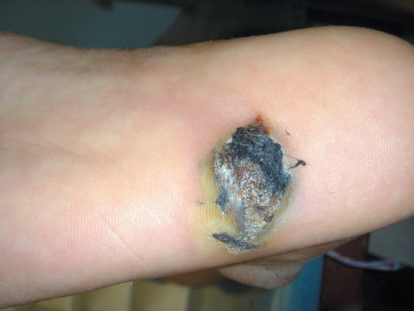
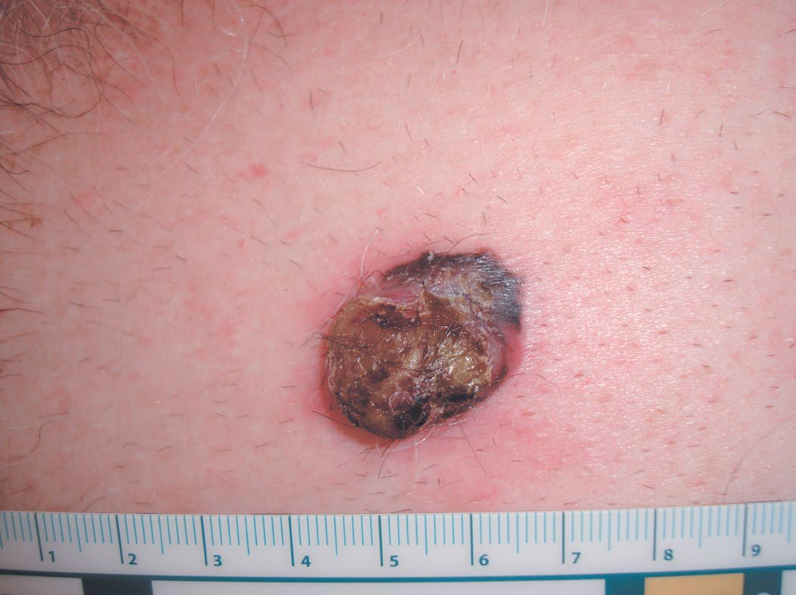
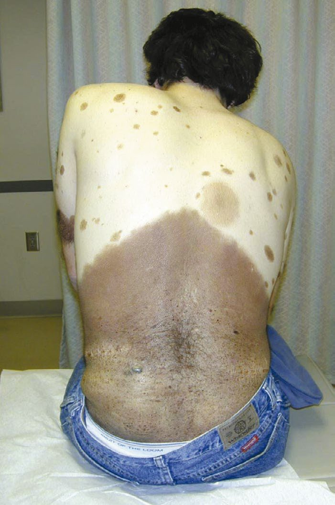
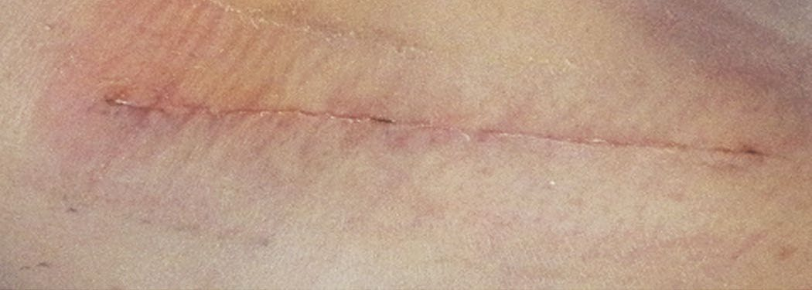
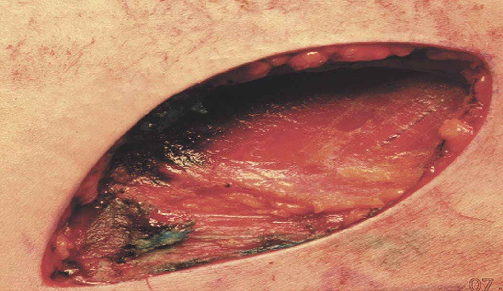
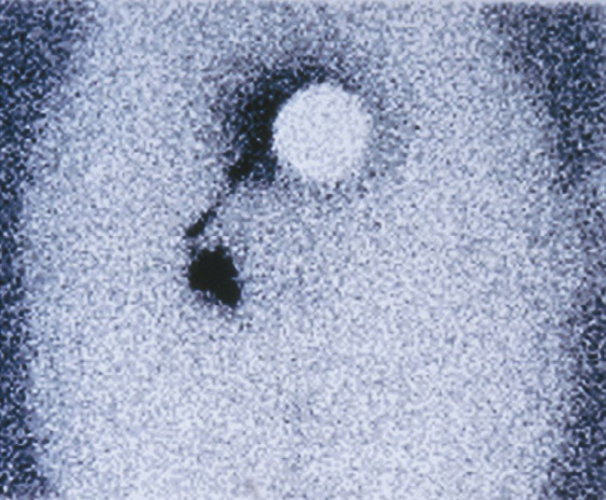

Melanoma
Summary
- Malignant melanoma is a cutaneous malignancy arising from melanocytes that, although accounting for less than 2% of skin cancer cases, causes the majority of skin-cancer-related deaths and represents about 15% of skin cancers but 65% of skin cancer deaths [1][2].
- Bailey & Love gives the UK proportions slightly differently: melanoma accounts for less than 5% of skin malignancy and 1.6% of all malignancy worldwide, but is responsible for over 75% of skin-malignancy-related deaths, and is the commonest cancer in young adults aged 20–39 and the most likely cause of cancer-related death in that group [3].
- Diagnosis is guided by the ABCDE clinical criteria and confirmed by biopsy, with Breslow thickness the principal determinant of prognosis and of the surgical margin required for wide local excision [1].
- Management combines wide local excision, sentinel lymph node biopsy for intermediate and thick lesions, and, for high-risk resected or metastatic disease, adjuvant or systemic immunotherapy and BRAF/MEK-targeted therapy [1].
- UK practice is governed by NICE NG14, Melanoma: assessment and management, published in 2015 and substantially updated in July 2022.
- Its nine sections run from communication and support through assessment, staging with sentinel lymph node biopsy, management by stage, and follow-up [4].
- The 2022 update rewrote the sections that matter most surgically (sentinel node biopsy indications, excision margins, and completion lymph node dissection) so a reader working from an older account will be wrong on all three.
Two recommendations sit outside the usual clinical territory and are easy to miss. Measure vitamin D levels at diagnosis in secondary care in all people with melanoma, giving advice on supplementation and monitoring where levels are thought to be suboptimal [4]. And do not withhold or change drug treatment for other conditions on the basis of a melanoma diagnosis, except immunosuppressants and immunomodulators, for which advice should be sought from the person's specialist team [4].
Definition
- Malignant melanoma is the malignant transformation of melanocytes, which originate from the neural crest and are therefore neuroectodermal in origin; use of the descriptive term "malignant melanoma", rather than "melanocarcinoma" or "melanosarcoma", is recommended, reserving "mole" or "pigmented naevus" for benign lesions [5].
- Melanoma originates from neural crest-derived melanocytes in the basal layer of the epidermis [2].
- A mole becomes a malignant melanoma when melanocytes invade adjacent tissue or show abnormal, excessive multiplication [5].
- Bailey & Love makes the anatomical scope explicit: melanoma is a cancer of melanocytes and can therefore arise in skin, mucosa, retina and the leptomeninges [3].
Microscopically, malignant change occurs in the melanocytes of the basal epidermis; in situ disease means atypical melanocytes confined to the dermoepidermal junction with no dermal involvement. During the horizontal growth phase cells spread along the dermoepidermal junction and, although they may breach the dermis, migration is predominantly radial; during the vertical growth phase the dermis is invaded, and the greater the depth of invasion, the greater the metastatic potential [3].
Pathophysiology
- Melanoma has the highest mutational burden of any malignancy studied in humans [1].
- Integrative genomic analysis identified four molecular subtypes based on the most prevalent altered genes: mutant BRAF, about half of cutaneous melanomas and most commonly V600E; mutant RAS, about 30%; mutant NF1, about 15%; and triple-wild-type [1].
- Nearly all subtypes exert their effect through the MAPK signalling pathway, in which gain-of-function mutations in BRAF or RAS, or loss of the inhibitory step supplied by NF1, cause unchecked cellular growth.
- The PI3K/AKT pathway is also frequently altered, with loss of the tumour suppressor PTEN in 25–50% of non-familial melanomas contributing to resistance to BRAF/MEK-targeted therapy [1].
- Additional loss of tumour-suppressor genes is required for full neoplastic development; CDKN2A, which encodes INK4A and ARF, is inactivated in many familial melanomas [1].
- Bailey & Love states the therapeutic consequence of the BRAF mechanism directly: when mutation locks BRAF protein signalling to "on", it affects the MAPK pathway, promoting initiation, malignant transformation, tumour progression and metastasis in the 50% of melanomas with BRAF V600 mutations [3].
Tumour growth proceeds through an initial radial growth phase confined to the epidermis and superficial dermis, followed by a vertical growth phase in which the lesion becomes raised and palpable and gains access to blood vessels and lymphatics, enabling metastasis [1]. Melanoma spreads through intradermal lymphatics to form satellite nodules around the primary lesion, and via lymphatics to regional nodes, with the malignant pigment sometimes spreading diffusely to produce a brown halo in surrounding skin [5].
Ultraviolet exposure and the two patterns of disease
Bailey & Love draws a distinction between exposure patterns that maps onto histological subtype and age at onset. Cumulative UV exposure favours the development of lentigo maligna melanoma and later onset of disease, whereas "flash fry" exposure typical of rapidly acquired holiday tans favours the other morphological variants and early onset [3]. It also records a nuance that complicates the simple sun-avoidance message: thinner melanomas and lower recurrence rates have been linked to higher serum vitamin D levels, and studies are ongoing into whether a degree of sun exposure short of burning, and sun-related rather than supplemental vitamin D production, is beneficial, but the best information still places sun avoidance at the centre of melanoma prevention [3].
Clinical features
- Melanoma commonly presents as an irregular pigmented skin lesion that has grown or changed over time; the ABCDE criteria, Asymmetry, irregular Borders, Colour variegation, Diameter greater than 6 mm, Evolution or change over time, guide the decision to biopsy [1][6][7].
- Cardinal symptoms of malignant change in a mole are loss of normal surface skin markings, itching often with a pale pink halo, increase in size, shape or thickness, change in colour with patchy darkening or blue-purple areas from increased vascularity, bleeding which is usually slight and a late sign, and satellite nodules or regional lymph node enlargement indicating spread [5].
- Bailey & Love's list of macroscopic features suggestive of malignant change in a naevus is change in size, shape, colour or thickness (elevation, nodularity or ulceration), satellite lesions with pigment spreading into the surrounding area, and tingling, itching or serosanguineous discharge as usually late signs [3].
- The most common site is the back in men and the legs in women; melanoma is rare before puberty and rare in Black individuals compared with White individuals [2][5].
- Roughly 10% of patients present with regional nodal disease and up to 5% with distant metastases at diagnosis; in-transit metastasis refers to tumour spread within draining lymphatic channels evident as cutaneous or subcutaneous nodules between the primary and the regional nodes [1].
- Amelanotic melanoma presents as a raised pink, purple or flesh-coloured lesion and is often diagnosed late [6].
- Blue colouration is the most ominous sign clinically [2].
- Bailey & Love adds two epidemiological facts with direct clinical consequences: 5% of all patients with malignant melanoma will develop a second primary melanoma, and 7% of malignant melanomas present as occult metastasis from an unknown primary [3].

The four common variants
Four major histological and clinical types exist [1][2][3][6]:
| Variant | Frequency | Features |
|---|---|---|
| Superficial spreading | 70% of presentations | Usually arises in a pre-existing naevus after several years of slow change, followed by rapid growth in the months before presentation; nodularity within it heralds the onset of the vertical growth phase |
| Nodular | 15% | More aggressive than superficial spreading, with a shorter clinical onset; often arises de novo, commoner in men, usually middle age, on trunk, head or neck; blue/black papules 1–2 cm, sharply demarcated because they lack a horizontal growth phase; up to 5% amelanotic |
| Lentigo maligna melanoma | 5–10% | Slow-growing variegated brown macule on the face, neck or hands of the elderly; correlated with prolonged intense sun exposure; affects women more than men |
| Acral lentiginous | 2–8% in White populations, 35–60% in Afro-Caribbean, Hispanic and Asian populations | Soles and palms; flat irregular macule in later life; 25% amelanotic and may mimic fungal infection or pyogenic granuloma |
Table reformats the macroscopic variants [3]. Bailey & Love qualifies the reputation of lentigo maligna melanoma as indolent: it is thought to have less metastatic potential because it takes longer to enter the vertical growth phase, but once it has entered that phase its metastatic potential is the same as any other melanoma [3].
Two rarer forms matter surgically. Desmoplastic melanoma is mostly found in the head and neck, has a propensity for perineural infiltration, often recurs locally if not widely excised, and may be amelanotic clinically [3]. Amelanotic melanoma may present as a flesh-coloured skin lesion, as a metastasis from an unknown skin primary, or in the gastrointestinal tract with obstruction or intussusception [3].
Subungual and nail-unit melanoma
- Subungual melanoma is often mistaken for a subungual haematoma; unlike a haematoma, it does not migrate distally with nail growth [1].
- Bailey & Love adds three points that change practice. Melanomas under the fingernail are usually superficial spreading rather than acral lentiginous.
- For finger or toenail lesions it is vital to biopsy the nail matrix rather than just the pigment on the nail plate
- And the classical feature is Hutchinson's sign: nail fold pigmentation that widens progressively to produce a triangular pigmented macule with associated nail dystrophy, the differential being benign racial melanonychia, a linear dark streak under a nail in a dark-skinned individual, in which malignancy is unlikely if the nail fold is uninvolved [3].

Etiology
- There is a clear association between UV radiation exposure and melanoma development, with intense intermittent sun exposure (severe blistering sunburns) a stronger causative factor than chronic sun exposure; both UVA, implicated in tanning-bed-associated melanoma, and UVB contribute [1].
- Genetic risk factors include high-risk skin types (Fitzpatrick I and II), family history of melanoma, and xeroderma pigmentosum; patients with a prior melanoma or other skin cancer, or with many melanocytic naevi, dysplastic naevi or giant congenital naevi, are also at increased risk [1][7].
- Dysplastic, atypical or large congenital naevi confer roughly a 10% lifetime melanoma risk, and familial atypical multiple mole-melanoma syndrome carries almost 100% risk; about 10% of melanomas are familial, most commonly linked to CDKN2A mutation [1][2].
- Fair complexion, blonde or red hair, blue eyes, easy sunburning, freckling tendency and inability to tan are recognised phenotypic risk factors [1][5].
- Bailey & Love's risk list adds several quantified items and one striking multiplier.
- Those at most risk are people with genetic syndromes; those with a past history of melanoma or a first-degree relative with melanoma; those with more than 30 sun-acquired naevi or a history of five significant sunburns before the age of 16; fair-skinned or red-haired people living close to the equator; anyone with excessive UV exposure whether environmental or salon-delivered; and anyone with immunosuppression, which increases melanoma incidence 20- to 30-fold [3][7].
- Two social associations are also recorded: male gender and solitary living are both associated with thicker melanomas at diagnosis, and in women higher socioeconomic status is positively correlated with developing melanoma [3].
- Geographical distribution reflects exposure of white-skinned individuals to sunlight, with Australia and New Zealand having an incidence of 33.6 per 100,000 [3].
The books disagree on how often melanoma arises in a pre-existing lesion, and the disagreement is worth carrying. Sabiston puts it at up to 40% arising within a dysplastic, congenital or Spitz naevus [1]; Browse's says more than 25% arise de novo in normal skin [5]; and Bailey & Love reverses the emphasis, stating that only 10–20% of melanomas form in pre-existing naevi, with the remainder arising de novo in previously normally pigmented skin, the naevi most likely to transform being atypical naevi, atypical junctional lentiginous naevi (usually facial) and giant pigmented congenital naevi [3].

Diagnosis
- Skin biopsy techniques include excisional biopsy, complete removal and best for small lesions, oriented to allow subsequent wide excision if needed; incisional or punch biopsy for larger lesions, minimum 4 mm punch; and shave biopsy, common but risking transection of the lesion and confounding Breslow thickness assessment, with deep shave or saucerisation to subcutaneous fat mitigating this [1].
- Lesions under 2 cm are generally managed with excisional biopsy unless in a cosmetically sensitive area, while lesions over 2 cm or in cosmetically sensitive areas are managed with incisional or punch biopsy; both require subsequent margin resection if pathology confirms melanoma [2].
- Bailey & Love specifies the biopsy margin: an excision biopsy with a 2- to 3-mm margin of skin and a cuff of subdermal fat is acceptable, with incision biopsy occasionally indicated, for instance in large facial lesions where excising the whole lesion would be disfiguring [3].
- Oxford gives a 2 mm margin including subcutaneous fat for all suspicious pigmented lesions [7]. Ablation of pigmented lesions by cryotherapy, cautery or laser is discouraged as it delays diagnosis [1].
- All pigmented lesions are sent for permanent-section pathology; immunohistochemical stains for melanoma markers include S-100, HMB-45 and Melan-1 [1][2].
- Breslow thickness, vertical thickness measured to the nearest 0.1 mm from the granular layer to the deepest tumour cell, has largely replaced Clark's level of invasion as the principal prognostic depth measure because of lower interobserver variability; melanomas are classified as thin (under 1 mm), intermediate (1–4 mm), or thick (over 4 mm) [1][3].
- Ulceration, the absence of intact epithelium over the tumour histologically, is a critical adverse prognostic factor across all thickness categories [1].
- Additional workup for localised stage I/II disease is generally unnecessary; imaging and blood tests including LDH are reserved for thick primaries, clinically apparent nodal disease, or suspected stage IV disease [1][2].
- Tumour-infiltrating lymphocytes, classified as brisk, non-brisk or absent, indicate host immune response and correlate with more favourable prognosis [1].
Bailey & Love notes that in experienced hands, observation and review every 2 months may avoid biopsy in equivocal cases, but that serial clinical and dermoscopic photography by a clinician with expertise in dermoscopy is mandatory when observation is chosen rather than excision biopsy for definitive histopathological diagnosis [3]. Oxford records that dermatoscopy is used to improve the accuracy of clinical diagnosis of melanoma, and that melanomas and squamous cell carcinomas are managed by skin cancer multidisciplinary teams [7].
- NG14 makes dermoscopy mandatory and restricts the adjuncts around it.
- Assess all pigmented skin lesions that are either referred for assessment or identified during follow-up in secondary or tertiary care using dermoscopy carried out by healthcare professionals trained in the technique [4].
- Conversely, do not routinely use confocal microscopy or computer-assisted diagnostic tools to assess pigmented skin lesions [4].
- For a clinically atypical melanocytic lesion that does not need excision at first presentation, use baseline photography, preferably dermoscopic, and review the clinical appearance against the baseline images 3 months after first presentation [4].
Spitzoid lesions have their own rule, and it is a conservative one. All suspected atypical Spitzoid lesions must be discussed at the specialist skin cancer multidisciplinary team meeting; the diagnosis of a Spitzoid lesion of uncertain malignant potential is made on histology, clinical features and behaviour; and such a lesion is managed as melanoma [4].
BRAF testing is staged by tumour stage, and the thresholds are specific [4]:
| Stage at presentation | BRAF analysis |
|---|---|
| IA or IB | Do not offer, except as part of a clinical trial |
| IIA | Consider |
| IIB to IV | Carry out |
- Table reformats the BRAF testing thresholds [4].
- When doing BRAF analysis, consider immunohistochemistry as the first test for BRAF V600E if available, and if that is negative or inconclusive use a different BRAF genetic test [4].
- Where targeted systemic therapy is a treatment option, genetic testing should use a secondary melanoma tissue sample if cellularity is adequate, and a primary sample only if a secondary one is unavailable or inadequate [4].
Scoring and Severity
- AJCC 8th edition TNM staging is based on Breslow thickness (T1 ≤1.0 mm, T2 >1.0–2.0 mm, T3 >2.0–4.0 mm, T4 >4.0 mm), with T1 further subclassified by ulceration, T1b being ulceration at any thickness or thickness 0.8–1.0 mm without ulceration [1][3].
- N stage incorporates the number of involved nodes, nodal tumour burden (clinically occult by sentinel node biopsy versus clinically apparent) and, since the 8th edition, stratifies in-transit, microsatellite and satellite metastases by node number as N1c, N2c and N3c [1].
- M stage is stratified by anatomical site, M1a distant skin, soft tissue or non-regional nodes; M1b lung; M1c non-CNS viscera; M1d CNS, and by serum LDH, with elevated LDH indicating worse prognosis in all M categories [1][3].
- Clinical staging is based on biopsy and physical examination; pathological staging additionally requires assessment of regional nodes, usually by sentinel node biopsy [1].
Bailey & Love is candid about the practical status of the system: the detail of the AJCC melanoma staging system has become too specialised for a general surgical text, and most specialists look up its detail as they assign a stage to a patient [3]. Prognosis is worse in older patients, males and axial primary sites, and worse for ulcerated, ocular and mucosal lesions, factors not all captured by the AJCC system [1][2].
NG14 keys imaging to stage rather than to Breslow thickness alone, and it forbids imaging in two situations. Do not offer imaging or sentinel lymph node biopsy to people with stage IA melanoma [4], and do not offer imaging before sentinel node biopsy unless lymph node or distant metastases are suspected [4]. Beyond that [4]:
| Stage | Staging imaging |
|---|---|
| IIB | Consider whole-body and brain contrast-enhanced CT |
| IIC to IV | Offer whole-body and brain contrast-enhanced CT |
| IIB to IV, children and young adults birth to 24 years, or pregnant women | Offer whole-body and brain MRI instead of CE-CT |
| IIIC to IV with a mitotic index of 5 or more, or a scalp primary | Consider brain MRI instead of brain CE-CT |
Table reformats the NG14 staging imaging pathway [4]. Brain MRI may also be substituted for brain CE-CT generally if locally available and agreed with the specialist skin cancer MDT [4]. Consider a repeat staging scan before starting adjuvant treatment, unless imaging done within the past 8 weeks is available [4].
Treatment and Management
- Treatment for all stages combines resection of the primary tumour with appropriate margins, down to the muscle fascia, and management of the regional lymph nodes [2].
- Recommended wide local excision margins by Breslow thickness in the American account are in situ 0.5 cm; thin (under 1 mm) 1 cm; intermediate (1–2 mm) 1–2 cm; and thick (over 2 mm) 2 cm, margins greater than 2 cm have shown no additional benefit in randomised trials, though 1 cm margins carry a higher local recurrence risk than 2 cm for intermediate-thickness lesions [1][2].
- Bailey & Love's UK scheme is 5 mm for melanoma in situ, 1 cm for melanoma under 1 mm deep, and 2 cm only for deeper lesions, as there is no evidence that wider margins make a difference [3].
- Oxford gives a third variant: typically 1 cm for lesions under 1 mm thick, 2 cm for 1–2 mm, and 2–3 cm for lesions over 2 mm thick [7].
- Mohs micrographic surgery is not considered oncologically acceptable for melanoma outside highly selected cases at experienced centres, being used mainly for melanoma in situ [1][2].
- Adjuvant systemic therapy has transformed outcomes for resected high-risk stage III melanoma: dual BRAF/MEK inhibition with dabrafenib and trametinib for BRAF-mutant disease improved 5-year relapse-free survival from 36% to 52% in COMBI-AD; the anti-CTLA-4 antibody ipilimumab improved 5-year overall survival from 54.4% to 65.4% in EORTC 18071 but with substantial toxicity; and the PD-1 inhibitors nivolumab and pembrolizumab achieved superior relapse-free survival with a better safety profile in CheckMate 238 and EORTC 1325/KEYNOTE-054 [1].
- Historically, high-dose interferon-alfa-2b was the only approved adjuvant therapy but was poorly tolerated and only marginally effective on disease-free survival with minimal overall survival benefit [1].
- Bailey & Love summarises the current adjuvant evidence base cautiously: over the preceding 5 years, five randomised prospective adjuvant trials reported in stage II to IV disease, and while all five showed a significant improvement in relapse-free survival, only two were mature enough to report on overall survival [3].
- First-line chemotherapy for metastatic melanoma is dacarbazine; radiotherapy can aid regional control without a proven survival benefit, and Oxford states plainly that surgery aims to cure melanoma, while radiotherapy and chemotherapy are used for palliation only [2][7].
- Resection of isolated, low-risk-to-resect metastases offers some patients a long disease-free interval and represents the best chance of cure in selected patients with metastatic disease [2].
NG14's excision margins are set by stage, not by millimetre bands of Breslow thickness, and this is the version a UK trainee is examined on [4]:
| Stage | Clinical margin |
|---|---|
| 0 (in situ) | Consider at least 0.5 cm |
| I | 1 cm, also used where a 2 cm excision would cause unacceptable disfigurement or morbidity |
| II | 2 cm |
- Table reformats the NG14 excision margins [4].
- The margin is measured around the histological biopsy scar and takes into account the primary melanoma margin [4], which is the detail most often lost when the figures are quoted.
- Where excision for stage 0 melanoma does not achieve an adequate histological margin, further management is discussed with the specialist skin cancer MDT [4].
- Note that NICE caps the margin at 2 cm; the 2–3 cm figure for thick lesions given in the Oxford Handbook above is not the NICE position.
- Topical imiquimod has two defined roles.
- Consider it to treat stage 0 melanoma in adults if surgery to remove the entire lesion with a 0.5 cm clinical margin would lead to unacceptable disfigurement or morbidity, with a repeat skin biopsy afterwards to check effectiveness [4].
- Consider it also to palliate superficial melanoma skin metastases in stage III disease [4].
- In July 2022 this was an off-label use in adults, and imiquimod was not licensed in the UK for under-18s [4].
Adjuvant radiotherapy is largely prohibited. Do not offer adjuvant radiotherapy to people with stage IIIA melanoma, and do not offer it to people with resected stage IIIB to IIID melanoma unless a reduction in the risk of local recurrence is estimated to outweigh the risk of significant adverse effects [4].
For in-transit metastases, surgery comes first. Offer surgery as the first option; if surgery is not feasible or the metastases are recurrent, consider systemic anticancer therapy, talimogene laherparepvec, isolated limb infusion or perfusion, radiotherapy, electrochemotherapy, or a topical agent such as imiquimod [4].
- For stage IV and unresectable stage III disease, immunotherapy is first line and the sequence is specified.
- Offer nivolumab plus ipilimumab if suitable; if that is unsuitable or unacceptable because of potential toxicity, offer pembrolizumab or nivolumab monotherapy [4].
- BRAF-targeted therapy is second line in this pathway, not an equal alternative: offer encorafenib plus binimetinib, or dabrafenib plus trametinib, to people with untreated BRAF-mutant disease only if the immunotherapies are contraindicated, or if it is predicted there is not enough time for an adequate immune response, for example because of high disease burden or rapid progression [4].
- Treatment choice is based on comorbidities and performance status, risk and tolerability of treatment toxicity, presence of symptomatic brain metastases, and tumour biology including disease burden, rate of progression and LDH level [4]. Do not routinely offer further cytotoxic chemotherapy to people who have had previous dacarbazine, except in a clinical trial [4], and refer people with incurable melanoma to specialist palliative care services for symptom management [4].
Surgeries
Wide local excision is performed to the muscular fascia, with fascia excision not routinely required, via a fusiform incision allowing primary closure where possible; frozen section margin analysis is not performed, and rotational flaps or grafts may be needed for larger defects, particularly on the head and neck or distal extremities [1]. Subungual melanoma is treated by amputation of the distal digit, with distal interphalangeal joint amputation sufficient for fingers and ray amputation unnecessary [1].
- Sentinel lymph node biopsy, introduced by Donald Morton in 1992, is performed using combined technetium-99 lymphoscintigraphy and intraoperative vital blue dye injection with a handheld gamma probe; a sentinel node is defined as the most radioactive node, any blue node, any node with 10% or more of the radioactivity of the hottest node, or any palpably abnormal node [1].
- It should be performed for tumours over 1 mm deep in clinically node-negative patients, and considered for 0.8–1.0 mm tumours with ulceration, high mitotic index or lymphovascular invasion [1][2].
- Elective upfront lymph node dissection in clinically node-negative patients is now obsolete, superseded by sentinel node biopsy [1].
- Formal therapeutic lymphadenectomy is required for clinically positive nodes, aiming to clear tumour rather than to stage: axillary dissection removes levels I, II and III, inguinal dissection covers superficial and selectively deep pelvic nodes, and cervical dissection is typically a functional neck dissection sparing the internal jugular vein and spinal accessory nerve [1][2].
- Superficial parotidectomy, or careful parotid sentinel node removal, is indicated for scalp and face melanomas anterior to the tragus and above the lower lip that are 1 mm or more deep, given a roughly 20% parotid metastasis rate; melanomas posterior to the ear drain to the posterior neck nodes instead [1][2].
- For head and neck melanoma, margins may be modified where they abut critical structures such as the carotid artery provided tumour-free margins are still achieved, and the facial nerve should be preserved unless already clinically involved [2].

Completion lymph node dissection: three positions, and they conflict
This is the point on which the three sources on this page diverge most sharply, and the divergence is worth stating rather than leaving in parallel.
Sabiston holds that completion lymph node dissection after a positive sentinel node no longer improves survival, on the strength of the MSLT-II and DeCOG-SLT randomised trials, which found equivalent melanoma-specific survival with observation and ultrasound surveillance, so it is now reserved for selective circumstances rather than performed routinely [1]. Bailey & Love reads the same evidence more narrowly, noting that prospective controlled studies showed no survival benefit from lymphadenectomy after a positive sentinel node involving micrometastasis under 0.2 mm in a single node, and suggesting this may be because most such patients were already treated by removing the sentinel node, which was the only involved node, and it concludes that completion lymphadenectomy after positive sentinel node biopsy remains, on current evidence, the optimum method for regional control, if patients accept the morbidity [3]. Oxford states simply that sentinel node biopsy may be considered, with lymph node dissection of neck, axilla or groin if positive [7].
- NICE resolves the disagreement above against routine completion dissection, and defines the exceptions. Do not routinely offer completion lymph node dissection to people with stage III melanoma and micrometastatic nodal disease detected by sentinel lymph node biopsy, unless there are factors that might make recurrent nodal disease difficult to manage and after discussion with the person and the specialist skin cancer MDT [4].
- The examples NICE gives of such factors are melanoma of the head and neck, people for whom stage III adjuvant therapies are contraindicated, and situations where regular follow-up is not possible [4].
- Therapeutic dissection is unaffected: offer therapeutic lymph node dissection to people with palpable stage IIIB to IIID melanoma, or cytologically or histologically confirmed nodal disease detected by imaging [4].
- The sentinel node biopsy thresholds are also NICE's own, and they are lower than "over 1 mm".
- Consider sentinel node biopsy for melanoma with a Breslow thickness of 0.8 mm to 1.0 mm and at least one of ulceration, lymphovascular invasion, or a mitotic index of 2 or more; and consider it for any melanoma with a Breslow thickness greater than 1.0 mm [4].
- Note the verb throughout is consider, not offer, NICE does not make sentinel node biopsy mandatory at any thickness.
- For women who are pregnant, discuss the option of delaying sentinel node biopsy until after the pregnancy is completed [4].


Anorectal melanoma
- After the skin and eye, the anorectum is the third most common site of melanoma, though melanoma of the anus and rectum accounts for less than 1% of all colorectal and anal neoplasms [8].
- There is a female predominance of almost 1:2, but the median age of affected males is significantly lower at 57 versus 71 years [8].
- Presenting symptoms are bleeding, itching, a mass, pain, tenesmus or change in bowel habit, and (as with anal squamous cell carcinoma) misidentification of the tumour as a haemorrhoid is a common mistake, with the diagnosis frequently made only after haemorrhoidectomy or local excision of a perianal mass [8]. About 30% of these tumours are amelanotic and unpigmented, making immediate recognition difficult, although 70% of lesions show some evidence of melanin production grossly or microscopically [8].
- Anal melanoma commonly arises at the mucocutaneous junction [8].
- Like cutaneous melanoma it is staged by depth or thickness.
- Lymphatic metastases occur to inguinal, mesorectal and internal iliac nodes, with mesorectal nodal metastases found in 40% to 60% of patients at presentation and inguinal adenopathy present in at least 20% [8].
- The operative question has been settled in favour of the lesser operation: local excision has replaced abdominoperineal resection, since retrospective series give 5-year survival of 0% to 29% after wide local excision and 0% to 26% after APR, so preservation of faecal continence is prioritised [8].
- The trade-off is local control, an MD Anderson study found recurrence after local excision significantly higher than after APR, 58% versus 29%, with identical median survival of approximately 19 months in both groups [8]. Wide local excision with negative margins is therefore the treatment of choice for patients without anal sphincter involvement [8].
- Inguinal node dissection is usually reserved for clinically positive nodes and is palliative; prophylactic nodal dissection does not appear to confer a survival benefit, and the role of sentinel node mapping, well established in cutaneous melanoma, has not been investigated in anorectal melanoma and is not routinely performed [8].
Complications
- Completion lymph node dissection carries significant short- and long-term morbidity, including wound complications, paraesthesias and permanent lymphoedema, and only 15–20% of patients with a positive sentinel node have additional non-sentinel node metastases found at completion dissection, meaning most patients undergoing it experience the morbidity without therapeutic benefit [1].
- Adjuvant immunotherapy carries a risk of serious immune-related adverse events; in the EORTC 18071 ipilimumab trial, serious adverse events occurred in 54% of treated patients and 1.1% died of treatment-related complications [1].
- Wide local excision requiring 2 cm margins in the head and neck or distal extremities may require complex tissue rearrangement or skin grafting for closure [1].
- Desmoplastic melanoma often recurs locally if not widely excised, because of its propensity for perineural infiltration [3].
Prognosis
- Prognosis worsens with increasing Breslow thickness, presence of ulceration, male sex, older age, axial primary site, and ocular or mucosal rather than cutaneous origin [1][2].
- Bailey & Love ranks the prognostic factors explicitly and in doing so contradicts the usual emphasis on ulceration: Breslow thickness offers the best correlation with survival in stage I disease, and the higher the mitotic index, the poorer the prognosis of the primary tumour, this has greater significance than the presence or absence of ulceration [3].
- Once nodes are involved, however, the hierarchy changes: the presence of lymph node metastases is the single most important prognostic index in melanoma, outweighing both tumour and host factors, with the number of affected nodes and the presence of extranodal extension also significant, and once regional nodes are clinically involved, 70–85% of patients will have occult distant metastases [3].
- Oxford summarises prognosis as depending on Breslow thickness, ulceration and lymph node involvement [7].
- In the MSLT-I trial, 10-year melanoma-specific survival for intermediate-thickness melanoma was 85.1% with a negative sentinel node biopsy versus 62.1% with a positive one, a hazard ratio of 3.09, confirming sentinel node status as the strongest predictor of recurrence or death among clinically node-negative patients [1].
- The lung is the most common site of distant melanoma metastasis, and melanoma is the most common cause of metastasis to the small bowel [2]; Schwartz's gives the ordering as lung and liver most common, followed by brain, gastrointestinal tract, and distant skin and subcutaneous tissue [6].
- A prolonged disease-free interval before development of resectable metastasis is associated with a better chance of cure after metastasectomy [2].
- For anorectal melanoma the outlook is uniformly poor: regardless of stage, 5-year survival averages about 6%, with median survival 12 to 18 months from diagnosis [8].
NG14 sets follow-up by stage, with a fixed duration and a tabulated schedule, and it is the most directly examinable part of the guideline. Offer follow-up for 1 year to people who have had stage IA melanoma, and for 5 years to people who have had stages IB to IV [4]. The schedule is [4]:
| Stage | Follow-up |
|---|---|
| IA | Consider 2 clinic appointments in year 1, discharge at the end of year 1. Do not routinely offer screening investigations, including imaging and blood tests |
| IB | Year 1: 2 clinic appointments. Years 2–3: 1 appointment each year. Years 4–5: 1 appointment each year, discharge at end of year 5. Consider adding ultrasound of the draining nodal basin if SLNB was considered but not done |
| IIA | Years 1–2: 2 appointments each year. Year 3: 1 appointment. Years 4–5: 1 appointment each year, discharge at end of year 5 |
| IIB | Years 1–2: 4 appointments each year, and consider 2 whole-body and brain CE-CT scans each year. Year 3: 2 appointments, consider 2 scans. Years 4–5: 1 appointment and consider 1 scan each year |
| IIC | Years 1–2: 4 appointments and 2 whole-body and brain CE-CT scans each year. Year 3: 2 appointments and 2 scans. Years 4–5: 1 appointment and 1 scan each year |
Table reformats the NG14 follow-up schedule [4]. Note the shift at stage IIB, where imaging enters the schedule and appointment frequency doubles, and note that at stage IIC the scans change from consider to offer.
- Three further rules govern follow-up imaging. Do not routinely use PET-CT during follow-up of people with melanoma [4]. For people having both CE-CT and ultrasound scans, alternate between the 2 types of scan [4].
- And offer whole-body and brain MRI instead of CE-CT to children and young adults from birth to 24 years and to pregnant women, and brain MRI instead of brain CE-CT to people with known or resected brain metastases [4].
- Full examination of the skin and regional lymph nodes at clinic appointments must be done by a healthcare professional with skills and expertise in skin cancer and lymph node examination, with access to dermoscopy and medical photography [4].
- Two groups fall outside the routine schedule.
- Offer personalised follow-up to people with unresectable stage III or IV melanoma [4], and consider personalised follow-up for people at increased risk of further primary melanomas, for example those with atypical mole syndrome, previous melanoma, multiple in-situ melanomas, or a history of melanoma in first-degree relatives or other relevant familial cancer syndromes [4].
- For people who have had stage 0 melanoma, advice is provided at a single clinic visit during the first year after treatment [4].
References
- Sabiston Textbook of Surgery, 22nd ed., Ch. 63 Melanoma and Cutaneous Malignancies
- The ABSITE Review, 2022, Ch. 6
- Bailey & Love's Short Practice of Surgery, 28th ed., Ch. 45 Skin and subcutaneous tissue
- NICE Guideline NG14: Melanoma — assessment and management (2015, last updated July 2022), 1.2.1; 1.2.2; 1.2.3; 1.3.1; 1.3.2; 1.3.3; 1.3.4; 1.3.5; 1.3.6; 1.3.7; 1.3.8; 1.3.9; 1.3.10; 1.3.12; 1.3.13; 1.4.1; 1.4.2; 1.4.3; 1.4.4; 1.4.5; 1.4.6; 1.4.8; 1.4.11; 1.5.1; 1.5.2; 1.5.3; 1.5.4; 1.5.5; 1.6.1; 1.6.2; 1.6.3; 1.6.4; 1.6.5; 1.7.2; 1.8.6; 1.8.8; 1.8.9; 1.8.10; 1.8.15; 1.8.16; 1.9.4; 1.9.5; 1.9.6; 1.9.7; 1.9.8; 1.9.9; 1.9.11; 1.9.12; 1.9.13; 1.9.15; Follow-up after stages I to IV melanoma; Recommendations www.nice.org.uk
- Browse's Introduction to the Symptoms and Signs of Surgical Disease, 6th ed., Ch. 4 The skin and subcutaneous tissues
- Schwartz's Principles of Surgery: ABSITE and Board Review, Ch. 16 The Skin and Subcutaneous Tissue
- Oxford Handbook of Clinical Surgery, 5th ed., Ch. 17 Plastic surgery
- Maingot's Abdominal Operations, 13th ed., Ch. 30 Anal Neoplasms